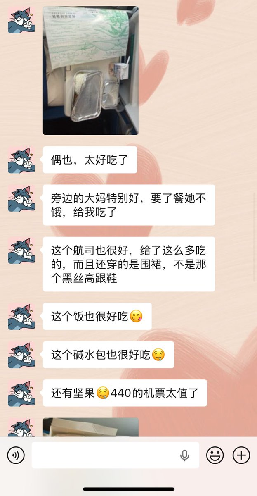

暮暮Mumula
@Mumula379528
@maomaomao520 首先必须提醒你，一个男性是否真的关注女性议题，不在于他看了多少女性议题的文本，或者多关心女性现状，而是在真正面对女性问题时能否把挥舞女性主义旗帜的旗子还给女性，请对关注女性议题的男性抱有十二分的警惕吧，通过亲和女性及女性议题来为自身谋利的男性比光明正大持有男性权力观的人更值得堤防

超级无敌喵喵拳
@maomaomao520
当一个男的会关注女性议题，就是加分项。我永远会被这种人打动 https://t.co/4HMORr6Hdx